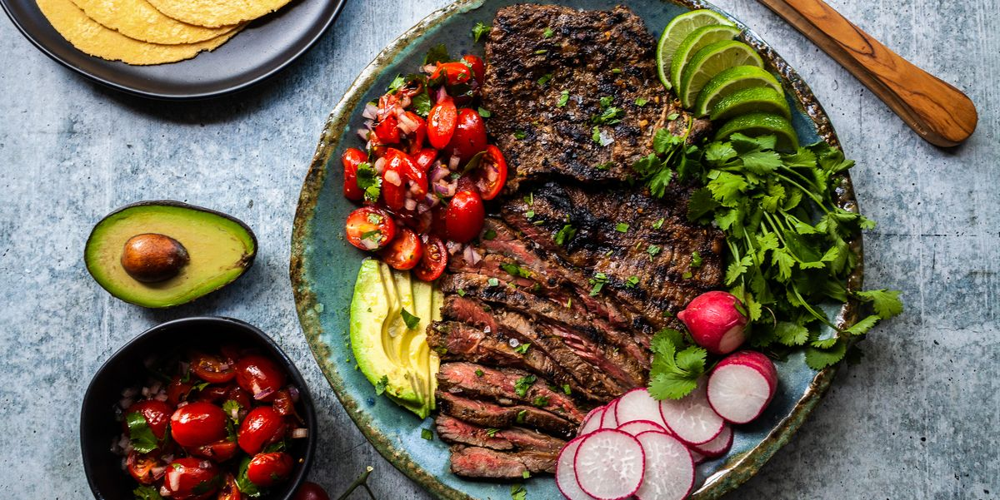
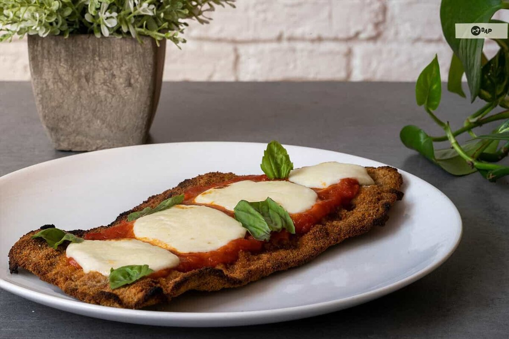
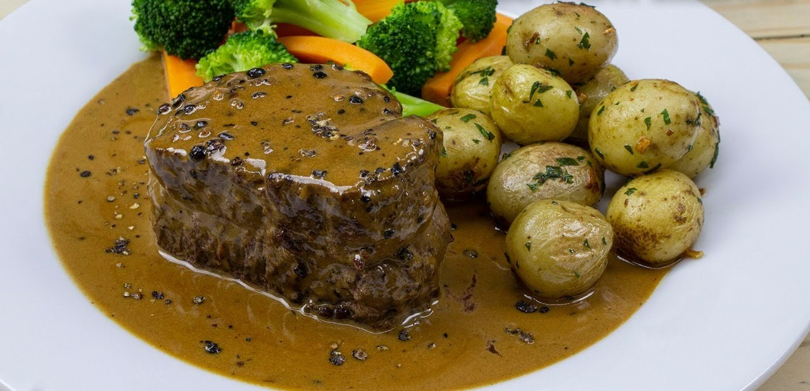
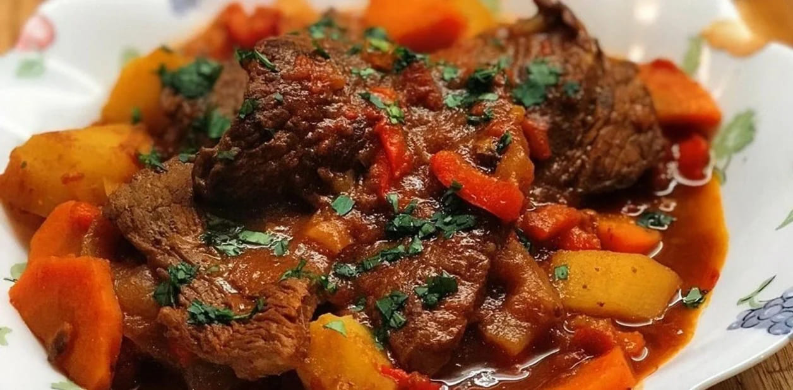
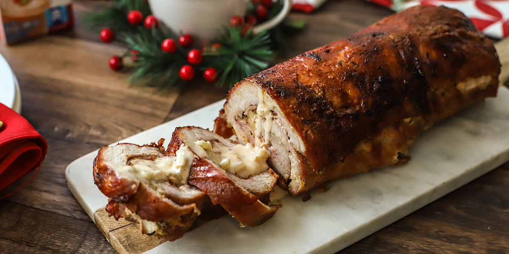

Procedimiento
Milanesa napolitana
Ingredientes- 4 huevos
- 200 g de jamón cocido
- 2 dientes de ajo
- Sal y pimienta, a gusto
- Perejil picado, a gusto
- Orégano fresco, a gusto
- 500 g de mozzarella
- Pan rallado, cantidad necesaria
- 1/2 litro de salsa de tomate
- 1 kilo de nalga para milanesas
- Aceite para freír
- Pelar los ajos y picar junto con el perejil.
- Colocar los huevos en un bowl y batir hasta disolverlos bien. Luego agregar el perejil, los ajos y condimentar con sal y pimienta.
- Colocar la carne en la mezcla anterior, dejar unos minutos, retirar y pasar por pan rallado.
- En una sartén con abundante aceite caliente freír las milanesas. Retirar y escurrir en papel absorbente.
- Acomodar las milanesas en una placa para horno, bañar con salsa de tomate, encima el jamón cocido y por ultimo la mozzarella.
- Cocinar en horno bien caliente hasta gratinar la mozzarella.

Procedimiento
Lomo a la pimienta
Ingredientes- 8 medallones de lomo de más o menos 1cm. de espesor
- 20 granos de pimenta negra
- 20 granos de pimenta blanca
- 4 cucharadas de manteca
- 1 taza de crema de leche
- 1 taza de agua caliente
- 1 Caldito de carne en cubo Knorr
- 4 papas grandes
- Aplastá groseramente con el cabo del cuchillo los granos de pimienta, dejándolos en trozos grandes.
- Presioná los medallones de lomo para que se adhiera la pimienta de ambos lados.
- Cociná en manteca, a fuego suave de uno y otro lado aproximadamente 15 minutos.
- Luego incorporá el caldito de carne y la taza de agua caliente. Mezclá bien y dejá cocinar a fuego bajo 5 minutos más
- Agregá la crema de leche y serví los medallones con la salsa y las papas noissette fritas.

Procedimiento
Bifes a la criolla
Ingredientes- 400 g de cuadril en bifecitos
- 1 morrón rojo en tiras
- 1 cebolla grande en tiras
- 1 zanahoria chica en medias rodajas
- 1 taza de tomate triturado
- 2 tazas de caldo (o de agua + un caldito o cucharada de caldito casero)
- Pimentón, ajo en polvo, sal y pimienta
- 1 papa en rodajas gruesas
- Perejil picado para decorar
- Sellar los bifecitos en una cacerola hasta que estén dorados de ambos lados.
- Agregar el morrón y la cebolla cortados. También las papas, la zanahoria, el tomate triturado, el caldo y condimentos. Revolver y cuando hierve tapar.
- Cocinar 20 minutos. Pasado ese lapso, destapar y dejar cocinar 15 minutos más.
- Apagar el fuego y dejar reposar un rato. Mientras, picar unas hojas de perejil. Servir con el perejil picado por encima.

Procedimiento
Lomo relleno con jamón y queso
Ingredientes- 1 cebolla en julianas
- aceite de oliva extra virgen
- 1 kg carne de lomo (res)
- 1 kg papas
- ajo
- vino tinto
- pimentón
- sal
- pimienta negra
- 200 g queso holanda
- 200 g jamón cocido
- verter un chorrito de aceite en la sartén y rehogar la cebolla cortada aros o julianas. Luego añadir el pimentón cortado fino. Agregar ajo, picar el queso y jamón en cubitos, añadir y revolver, para formar el relleno.
- Salpimentar la carne de lomo y sellar de un lado y otro en la sartén. Anadir un poco de vino tinto.
- Extender la carne de lomo sobre una tabla y añadir el relleno. Luego envolver en un rollo y sujetar con hilo para cocina atando el rollo todo a lo largo bien firme.
- Enaceitar una fuente para horno y añadir el rollo de carne de lomo rellena. Lavar y cortar las papas en cubos grandes o pequeños (según el gusto) y llevar al horno a temperatura de 180°.
- Cocinar al horno por el espacio de 30 a 40 minutos. Puedes añadir un poco más de vino tinto (si así lo prefieres) para realzar el sabor de la carne.
- Llevar a la mesa y disfrutar